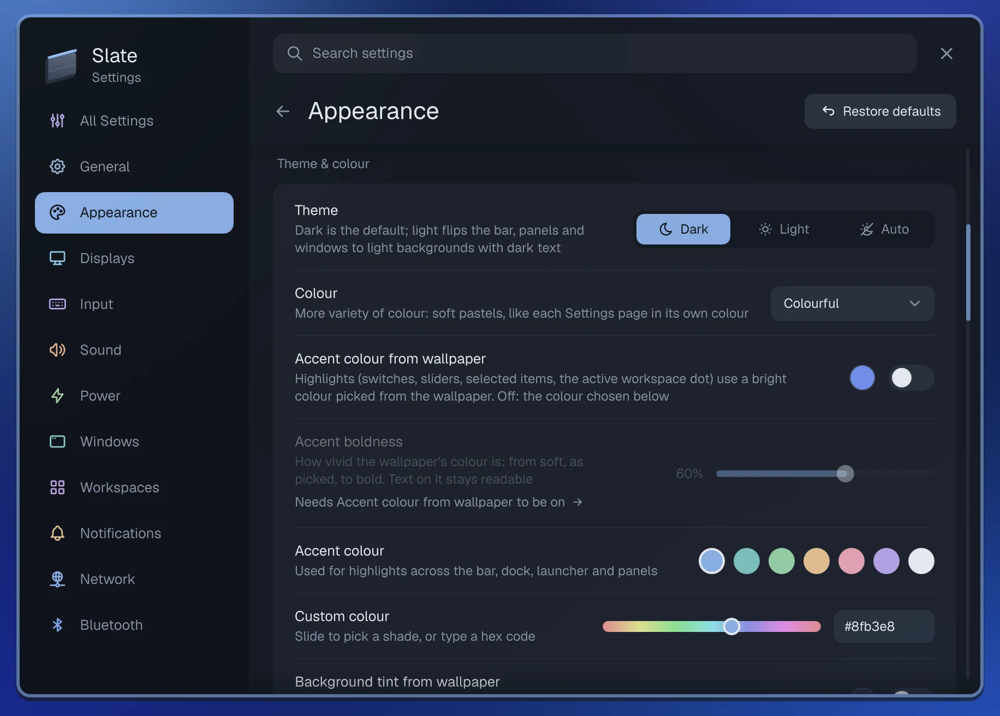

Look and feel
Appearance
Slate looks good from the moment you log in, and it takes its colors from your wallpaper if you'd like it to. Settings → Appearance is where you make it your own.
Wallpaper, icons and apps
At the top of the page, three rows open pages of their own:
- Wallpaper: your desktop picture, from your own folder or Slate's. See Wallpaper.
- Icons: the icon theme, folder colors and the shape of app icons. See Icons and pointers.
- App Theming: terminals, editors, GTK, Qt and more following Slate's colors. See App theming.
Preset
If you'd rather not fine-tune every setting, a preset gets you to a finished look in one go. It sets the theme, colors, glass and folder colors together:
- Slate Default: back to how Slate starts out.
- Liquid Glass: glass, with the accent, tint and folder colors taken from your wallpaper.
- Metro Flat: the same colors from your wallpaper, on solid surfaces without glass.
Slate asks before applying one. Your wallpaper and every other setting stay as they are. Once you change something yourself, the preset reads Custom.
Theme and color
Theme
Dark is the default. Light gives the bar, panels and windows light backgrounds with dark text, and Auto is light by day and dark in the evening: from sunrise to sunset once you've set your location in Settings → General → Location, or 7 in the morning to 7 in the evening until you do.

Light mode is still being polished, so Slate asks before switching to it. You can go back to Dark at any time.
Color
Colorful, the default, adds soft pastels: each Settings page has its own color, and settings you find in the launcher and Slate's notifications share it. Monotone keeps to your accent and grays.
Accent color
The accent lights up switches, sliders, selected items and the workspace you're on. Choose one of the presets, or any color with Custom color (slide to pick a shade, or type a hex code).
Accent color from wallpaper, on to start with, has Slate pick a bright color from your wallpaper instead; switch it off to choose your own. Accent boldness sets how vivid it is, from soft to bold (80% to start with); text on it always stays readable.
Background tint
Background tint from wallpaper lets the bar, panels and window backgrounds take on the wallpaper's overall hue while keeping their brightness. Tint boldness sets how much color they take (80% to start with). It's on to start with; off, they're a neutral slate.
With either of these on, everything shifts together when your wallpaper changes: the bar, panels, Settings and any themed apps.
Glass
Switch on Glass and the bar, dock, panels, menus, notifications, the launcher, Settings and the lock and login screens turn see-through, with the desktop blurred behind them. App icons sit on solid, glossy tiles, and window borders get a sheen across their top-left corner. It's off to start with.
| Setting | What it does |
|---|---|
| Opacity | How much of their color the surfaces keep: lower is clearer glass. |
| Blur | How strongly what's behind is blurred. It's Hyprland's blur, so see-through windows use it too; 0 leaves Hyprland's own. |
| Gloss | A glossy sheen on the bar's containers, hover highlights and tooltips. 0% for none. |
| Gloss color | How much color the sheen takes from what it's on. 0% for plain white. |
Some parts of Slate have glass settings of their own, on their own pages in Settings: the menu bar and its panels, the dock, notifications, the launcher and Nova's window.
Blur
- Fast blur, on to start with: see-through windows and glass blur just the wallpaper, not the windows under them. It's far less work, so everything stays smooth. Off, they blur whatever's under them, which is heavier and can slow animations and the pointer.
- Blur quality: from Low (1 pass) to Highest (4 passes), or Hyprland's own. Medium is the default; smoother blur asks a little more of your computer.
Style
- Rounded screen corners rounds off the corners of the screen and curves the bar into its edges.
- Rounded UI elements: switch it off and everything goes hard-edged and square: the bar's containers and panels, the dock, menus, buttons, switches and your windows. App icons and workspace dots keep the shapes chosen for them.
Shadows
Everything raised casts a soft shadow: panels, menus, the launcher, notifications and floating windows. They're dark, with a light tint of your theme, and they all follow the same settings.
At the top of the section, a preview shows a few of Slate's surfaces with their shadows. The Dark and Light switches in its corner change the background behind them, so you can see how they'd look over a dark window or a light one.
| Setting | What it does |
|---|---|
| Shadows | On to start with. Off, everything sits flat. |
| Darkness | How dark they are at their darkest (half as dark in light mode). |
| Softness | How gently their edge fades away. 0 is a crisp edge. |
| Spread | How far their full darkness reaches past the edge before it fades. |
| Distance | How far they sit from what casts them. 0 is all round, like a glow. |
| Direction | Which way they fall: 0° is straight down, 90° to the left, 180° up and 270° to the right. |
As you move a slider, every shadow on screen changes with it, floating windows' too, so you can judge it in place.
- Floating windows' shadows are drawn by Hyprland, made to look like the rest for the same settings.
- The menu bar and its panels follow the same direction as everything else, and their shadows are moved by the distance, never widened by it. With the bar at the bottom and shadows falling down, theirs mostly tuck under the bar.
- With glass on, shadows stay a little lighter than the darkness you set, so the glass doesn't blur them.
- In game mode, shadows are off. Your settings are kept for when it ends.
Fonts
Interface font (Geist to start with) is used across the bar, panels, launcher, switchers, notifications and Settings. Code font (Geist Mono) is the monospaced font for code. Each list shows every installed font in its own typeface, with a search box.
Code font in your apps makes the code font the monospaced font of your other apps too: terminals, editors and anything else that asks for one. It's off until you choose it, here or in the Welcome window, because it changes those apps' own settings. Slate keeps a note of each change, so switching it off puts their settings back as they were.
Size
Interface size, from 75% to 150%, makes Slate itself larger or smaller on every display: the bar, dock, panels, launcher, title bars and Settings. Your apps stay as they are; to scale everything, apps included, change Scale in Displays instead.
A new size takes effect when Slate restarts, so it asks first once you let go of the slider. Your apps and windows stay open, and Settings opens again right where you were.
Motion
Animations covers windows opening, closing and moving, workspace switches, and Slate's own panels, fades and highlights. Normal is the default, Faster halves them, and Off makes everything instant. How workspaces slide is set in Workspaces.